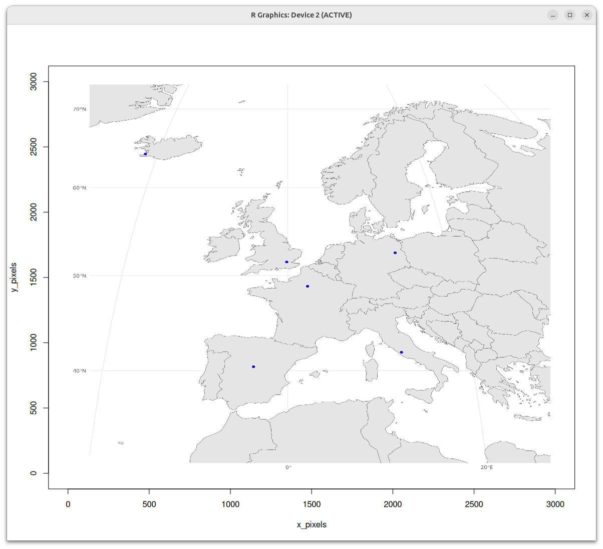
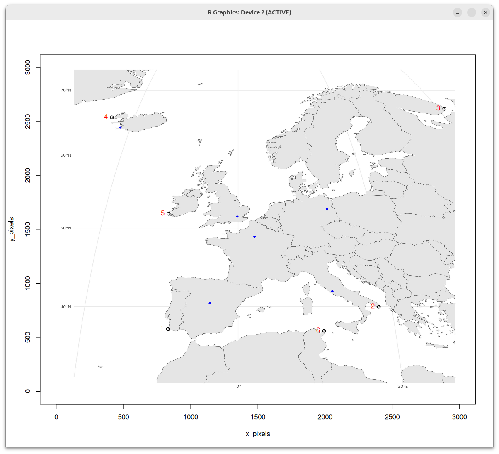
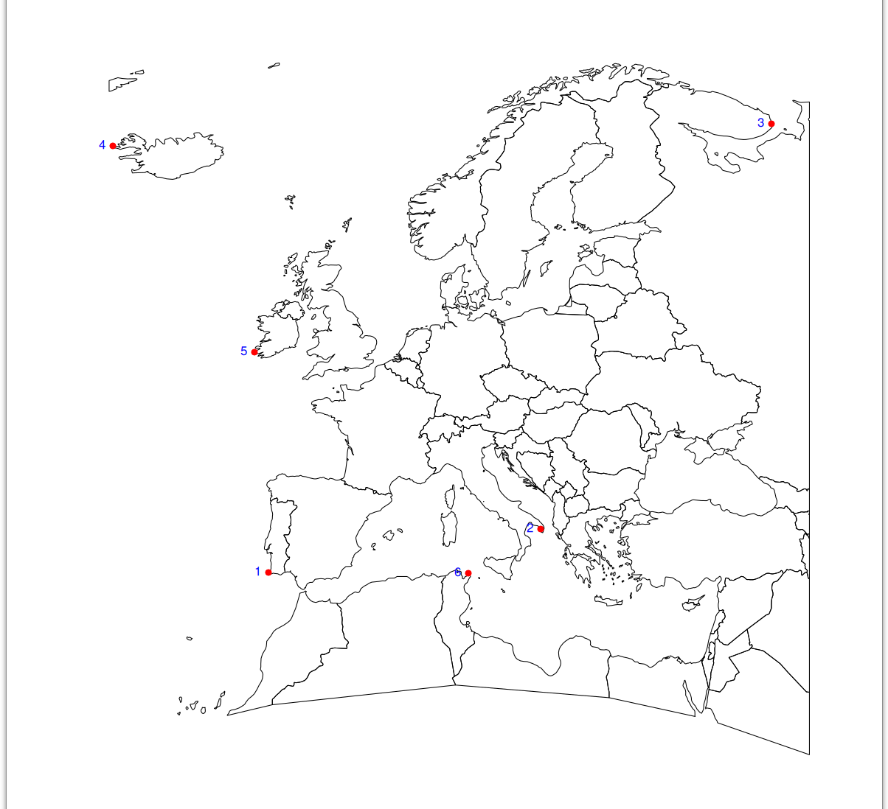
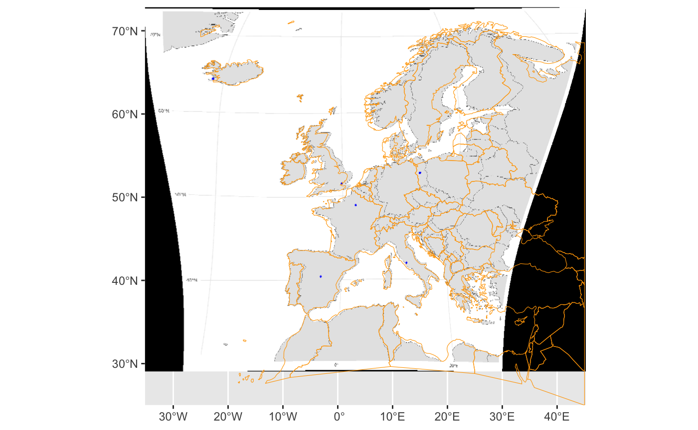
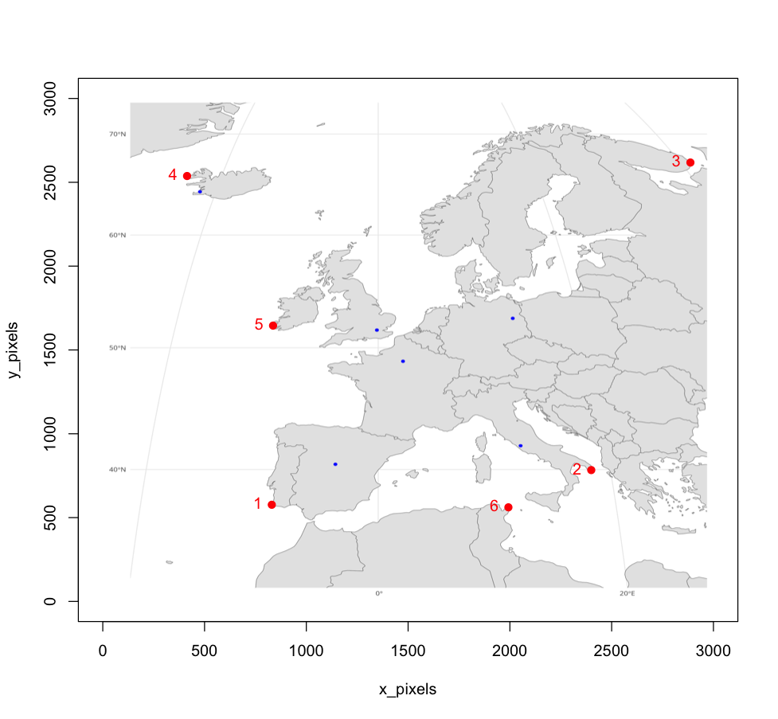
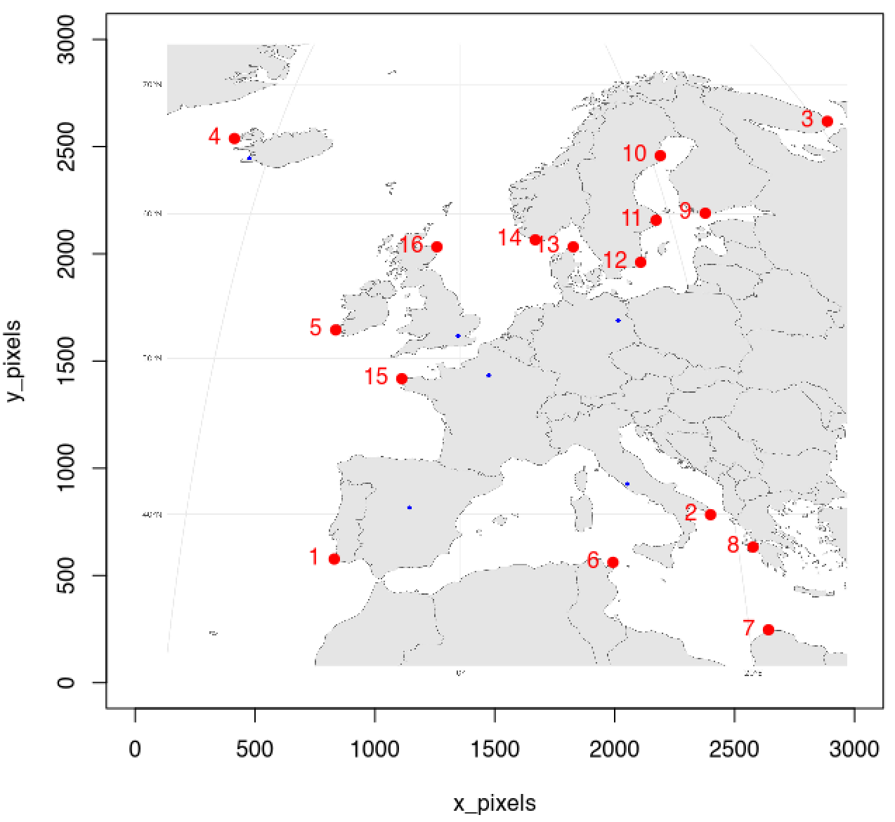
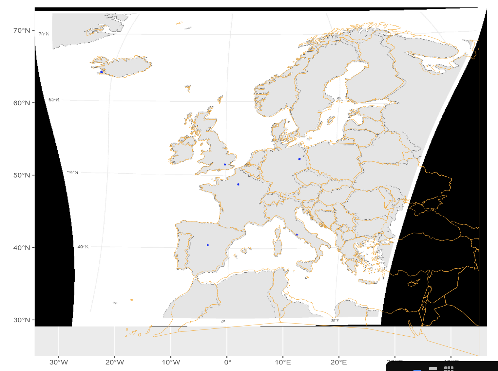

Georeferencing is the process of assigning real-world coordinates to
an image, allowing it to be accurately placed on a map. This is often
done using Ground Control Points (GCPs), which are known locations on
the ground with precise coordinates. In this vignette, we will
demonstrate how to georeference an image using GCPs in the
crstools package.
The process of assigning GCPs to an image is interactive, allowing
you to select points on the image and assign them geographic
coordinates. Unfortunately, this is not compatible with Rmarkdown or the
image pane within RStudio.crstools opens separate windows
for GCP assignment and image display, and the code has to be run from a
script or the console.
To get started, we need to load the crstools
package:
Next we need a .jpg image that we scanned or downloaded. We will use a map of Europe that is included with the package. The map has a number of points (the capitals of UK, France, Spain, Germany, Italy, and Iceland).
Our task is to georeference this image and then extract the coordinates of those capitals. We will copy a version of the image to a temporary directory, and work on that:
file.copy(
from = system.file("extdata/europe_map.jpeg", package = "crstools"),
to = tempdir(),
overwrite = TRUE
)
#> [1] TRUE
img_path <- file.path(tempdir(), "europe_map.jpeg")We can now select a number of GCPs with choose_gcp().
This function allows you to click on the image and assign coordinates to
the points you select. Choose locations that are easy to find again on a
map, such as features in coastlines (e.g. bays), or corners of country
boundaries.
gcp_europe <- choose_gcp(img_path)This will open a window showing the image:

choose_gcp()
You can click on the image to select points by left-clicking with your mouse. The points will be numbered in the order in which they were chosen; you can stop by pressing the ESC key, or with a right-click.

The coordinates of those points will be saved in the
gcp_europe dataframe, which contains the following
columns:
gcp_europe
#> id x y longitude latitude
#> 1 1 830.3113 576.5869 NA NA
#> 2 2 2399.7464 783.3988 NA NA
#> 3 3 2886.9187 2617.8971 NA NA
#> 4 4 414.0564 2537.4702 NA NA
#> 5 5 836.4781 1645.1151 NA NA
#> 6 6 1992.7416 561.2675 NA NANext we need to get the coordinates (longitude and latitude) of these
points. We can use the find_gcp_coords() function to assign
geographic coordinates to the GCPs. This function requires a reference
map in the form of an sf object. We will use the
rnaturalearth package to get a map of Europe, and then crop
it to the extent of the image.
library(sf)
#> Linking to GEOS 3.14.1, GDAL 3.12.2, PROJ 9.7.1; sf_use_s2() is TRUE
library(rnaturalearth)
# Load the world map
world <- ne_countries(scale = "medium", returnclass = "sf")
# Transform it to a suitable projection
world <- st_transform(world, crs = 4326) # WGS 84
# Crop it to the extent of the image to Europe
europe <- st_crop(world, c(xmin = -25, ymin = 25, xmax = 45, ymax = 70))
#> Warning: attribute variables are assumed to be spatially constant throughout
#> all geometriesLet’s quickly plot it to check that we have the correct extent:
library(ggplot2)
ggplot() +
geom_sf(data = europe, fill = "lightblue", color = "black") +
coord_sf(expand = FALSE) +
ggtitle("Map of Europe")Now we can use the find_gcp_coords() function to assign
geographic coordinates to the GCPs.

find_gcp_coords()
gcp_europe_coords <- find_gcp_coords(gcp_europe, europe)This will open a new window with the map of Europe, and you can click on the points to assign coordinates to the GCPs.
Now the gcp_europe_coords dataframe contains the
geographic coordinates of the GCPs:
gcp_europe_coords
#> id x y longitude latitude
#> 1 1 830.3113 576.5869 -9.071636 37.16461
#> 2 2 2399.7464 783.3988 18.132085 40.06647
#> 3 3 2886.9187 2617.8971 41.207327 67.11767
#> 4 4 414.0564 2537.4702 -24.627151 65.64215
#> 5 5 836.4781 1645.1151 -10.472369 51.87063
#> 6 6 1992.7416 561.2675 10.907249 37.11543Finally, we can use the georeference_img() function to
georeference the image using the GCPs. This function has a
transform_method argument that sets how pixel coordinates
are mapped onto the geographic ones. The best choice depends on the type
of map that we want to georeference and the number of GCPs that we
have:
"poly_1" (>= 3 GCPs): first order polynomial
transformation, shifts, scales, and rotate the image without bending it.
This type of transformation is suitable for maps that are in a lon/lat
projection or that cover a small area."poly_2" (>= 6 GCPs): second order polynomial
transformation, allows for bending of the image, thus being more
suitable for maps in other projections."poly_3" (>= 10 GCPs): third order polynomial
transformation, allows for capturing of more complex distortions than
the other two methods, but it is more sensitive to errors in the
GCPs."tps": thin plate spline transformation, allows for
local corrections, thus being more suitable for maps characterised by
artefacts, such as scanned maps, but requires many accurate, well spread
GCPs, since any wrong GCP can lead to strong distortion biases."auto": automatically "poly_1" or
"poly_2" transformation based on the number of GCPs
provided.It is important to highlight that, higher order polynomial transformations are not always the best choice. These are more sensitive to errors in the GCPs, and can lead to distortions in areas where there are no GCPs. High order polynomial transformations should be chosen when we have many accurate GCPs, well spread across the image. For maps taken directly from publications or other digital sources, like in our case, a first- or second-order polynomial transformation is usually sufficient:
georeferenced_image <- georeference_img(img_path, gcp_europe_coords,
transform_method = "auto")The georeference_img()function will create a new TIFF
file with the georeferenced image. The output file will have the same
name as the input image, but with the suffix _warp.tif
added to it.
The georeferenced image can be loaded into R using the
terra package as a SpatRaster:
map_warp <- terra::rast(georeferenced_image)We can now plot the georeferenced image to check the overlap between
the input image and the georeferenced image. This can inform us if more
points (GCPs) need to be added and previous steps repeated
(choose_gcp()).
library(ggplot2)
library(tidyterra)
ggplot() +
geom_spatraster_rgb(data = map_warp) +
geom_sf(
data = europe,
color = "orange",
fill = "transparent"
) +
coord_sf(expand = FALSE)
We can see that the georeferenced image is not perfectly aligned with the reference map, especially in the eastern part of Europe. This is likely due to geographically uneven distribution of the GCPs, which can lead to inaccuracies in the georeferencing process.
We can visually check the distribution of the GCPs that we have previously selected. To do so, we can plot the GCPs on the map of Europe to visualize their distribution:
plot_gcp(img_path, gcp = gcp_europe)
We can see that there most of the GCPs are clustered in the western part of Europe, with only one GCP (3) in the eastern part. This is likely to be the driver of the misalignment of the georeferenced image.
Rather than just visually assessing the distribution of our GCPs, we
can also assess their “quality” by looking at their residuals, using the
same transformation method that georeference_img() applied
to the image:
gcp_residuals <- get_gcp_residuals(gcp_europe_coords,
transform_method = "auto")
#> Warning in get_gcp_residuals(gcp_europe_coords, transform_method = "auto"):
#> Leave-one-out residuals could not be computed for 6 GCP(s), as the polynomial
#> of order 2 cannot be fitted without them. A polynomial of order 2 requires more
#> than 6 GCPs (and ideally many more) to compute leave-one-out residuals.
gcp_residuals[, c("id", "res_km", "leverage", "loo_km")]
#> id res_km leverage loo_km
#> 1 1 0 1 NA
#> 2 2 0 1 NA
#> 3 3 0 1 NA
#> 4 4 0 1 NA
#> 5 5 0 1 NA
#> 6 6 0 1 NAThis function returns the residual of the GCPs
("res_km"), which is the distance between where we placed
the GCP and where the transformation actually puts it. A GCP with much
larger residual that the others is likely to be misplaced. However,
residuals can be optimistic, since each GCP is used to fit the
transformation it is compared against. This is particularly true for
GCPs with high leverage values (ranging from 0 to 1), which
indicate isolated GCPs that pull the transformation towards them. The
leave-one-out residuals (LOO) ("loo_km") solve this issue
by measuring the error of each GCP when it is not used to fit the
transformation.
However, when the number of the GCPs equals the minimum required by
the chosen transformation method, like in our case (6 GCPs for a
second-order polynomial transformation), the transformation passes
through all the GCPs, so all residuals are zero and the leverages are 1.
LOO residuals are instead all NA, as removing any GCP
leaves us with too few GCPs to fit the transformation. This indicates
that more GCPs are needed to assess the error.
For these reasons, we may want to add more GCPs and spread them all across the image. To add more points to improve the fit, we use:
gcp_europe <- choose_gcp(img_path, gcp = gcp_europe)Additional points were added to the gcp_europe
dataframe:
gcp_europe
#> id x y longitude latitude
#> 1 1 830.3113 576.5869 NA NA
#> 2 2 2399.7464 783.3988 NA NA
#> 3 3 2886.9187 2617.8971 NA NA
#> 4 4 414.0564 2537.4702 NA NA
#> 5 5 836.4781 1645.1151 NA NA
#> 6 6 1992.7416 561.2675 NA NA
#> 7 7 2641.4229 246.7386 NA NA
#> 8 8 2576.9680 632.6570 NA NA
#> 9 9 2377.7439 2189.4124 NA NA
#> 10 10 2190.2389 2457.5930 NA NA
#> 11 11 2172.6603 2156.7075 NA NA
#> 12 12 2108.2054 1960.4778 NA NA
#> 13 13 1826.9479 2032.4287 NA NA
#> 14 14 1668.7405 2065.1336 NA NA
#> 15 15 1112.0849 1417.5757 NA NA
#> 16 16 1258.5732 2032.4287 NA NAWe can now visualise the new distribution of the GCPs on the map of Europe:
plot_gcp(img_path, gcp = gcp_europe)
Now we can repeat the process of assigning coordinates to the GCPs
using find_gcp_coords() and
georeference_img():
gcp_europe_coords_v2 <- find_gcp_coords(gcp_europe, europe)
gcp_europe_coords_v2Run the following code chunk to save the object if you are recreating the vignette
Repeat georeferencing of the image using the GCPs
georeferenced_image_v2 <- georeference_img(img_path, gcp_europe_coords_v2,
transform_method = "auto")
map_warp_v2 <- terra::rast(georeferenced_image_v2)
# check the new image
ggplot() +
geom_spatraster_rgb(data = map_warp_v2) +
geom_sf(
data = europe,
color = "orange",
fill = "transparent"
) +
coord_sf(expand = FALSE)
We can see that the additional points improved the georeferencing of the image, as the map now aligns better with the geographic coordinates of the GCPs.
We can also quantify the improvement by looking at the residuals of the GCPs:
gcp_residuals_v2 <- get_gcp_residuals(gcp_europe_coords_v2,
transform_method = "auto")
gcp_residuals_v2[, c("id", "res_km", "leverage", "loo_km")]
#> id res_km leverage loo_km
#> 1 1 68.450938 0.8030670 347.769285
#> 2 2 18.664149 0.2671434 25.471654
#> 3 3 31.156891 0.7841121 144.624312
#> 4 4 29.051832 0.8810218 244.446699
#> 5 5 75.230604 0.3704587 119.457728
#> 6 6 20.405018 0.3341893 30.647266
#> 7 7 44.734180 0.5612693 101.873068
#> 8 8 24.787248 0.3715407 39.454575
#> 9 9 67.358779 0.1692228 81.030203
#> 10 10 20.070918 0.3757668 32.150634
#> 11 11 39.382772 0.1370875 45.643790
#> 12 12 57.159895 0.1586542 67.909674
#> 13 13 3.760112 0.1649099 4.502607
#> 14 14 4.307852 0.1924397 5.334247
#> 15 15 29.116599 0.2508156 38.859346
#> 16 16 40.673444 0.1783012 49.511267As we can see, because we have more GCPs than the minimum required, we can now calculate the residuals, which we can summarise into an overall error, the root mean square error (RMSE):
sqrt(mean(gcp_residuals_v2$res_km^2))
#> [1] 41.70829
sqrt(mean(gcp_residuals_v2$loo_km^2, na.rm = TRUE))
#> [1] 124.4266The RMSE tells us that, on average, our GCPs are approximately 42 Km away from where the transformation places them, while the LOO RSEM is about three times larger. This gap indicates that the error is therefore larger in parts of the map that are far way from any GCPs. When we look at the residuals of each GCP, we can see that this is mostly driven by the GCPs placed at the edge of the map, such as GCP1 (Portugal), GCP4 (Iceland), and GCP3 (Russia), which have higher leverages and residuals much larger than the rest of the GCPs. This indicates that we may need to add more GCPs in these areas to improve the georeferencing of the image.
However, choosing if this magnitude of error is acceptable or not depends on what we want to do with the georeferenced image. If we need to extract data for analyses at large geographic scale, such as mapping the distribution of species across Europe, this level of error may be acceptable. On the other hand, more GCPs may be needed if we want to extract data at a finer scale with reduced error.
Assuming we are fine we this error, we now use locator to get the coordinates of the blue dots:
# get the coordinates of the blues points
blue_coords_df <- extract_coords(map_warp_v2)So we now have the coordinates of the blue dots:
blue_coords_df
#> id longitude latitude
#> 1 1 -3.2609722 40.36582
#> 2 2 12.5085660 41.72656
#> 3 3 12.9900786 52.31006
#> 4 4 -0.4922746 51.47850
#> 5 5 -22.4010987 64.17870There are only 5 entries - we forgot one of the dots, let’s re run the function:
blue_coords_df <- extract_coords(map_warp_v2, blue_coords_df)So we now we can see check that all the blue dots have been recorded:
blue_coords_df
#> id longitude latitude
#> 1 1 -3.2609722 40.36582
#> 2 2 12.5085660 41.72656
#> 3 3 12.9900786 52.31006
#> 4 4 -0.4922746 51.47850
#> 5 5 -22.4010987 64.17870
#> 6 6 1.9152885 48.68143Starting from a non georeferenced image, we were then able to extract the coordinates of our locations of interest.